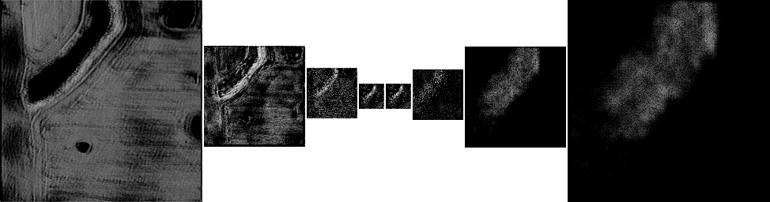

Exploring the Usefulness of Adding Auxiliary Preprocessed Image Layers With Convolutional Neural Networks
Jordan Goetze
Dr. Anne Denton
Dept. of Computer Science
North Dakota State University
Fargo, North Dakota 58103
jordan.goetze@ndsu.edu
anne.denton@ndsu.edu
Terminology
Terminology
Per-pixel image classifications
Useful for:
- Scene labeling
- Inferring relationships in an image.
Terminology
Land-Use Classification
Potential uses:
- Approximating crop yields by year
- Tracking changes in land use
- Tracking changes in forestry and vegetation
Terminology
Orthoimagery: "Fixes" various displacements such as building tilt and scale variations caused by terrain relief.Terminology
Convolutional Neural Network (CNN)Useful for:
- Scene labeling
- Image classification
Terminology
Auxiliary Preprocessed Image LayerExample: Normalized Difference Vegetation Index(NDVI)
$ NDVI = \frac{NIR-RED}{NIR+RED} $
Introduction
Introduction: What do CNNs learn?
Are there certain kinds of patterns they cannot learn, or learn too slowly to be effective?
Does the inclusion of image layers that are generated from the original source image help or hurt the model?
Introduction: Technology, Imagery and Data
- Cost of satellites and drones is decreasing.
- Cost of orthoimagery decreasing
- Amount of availiable orthoimagry increasing
- Amount and quality of labeled or annotated orthoimagery has not kept pace
Introduction: Availiable Data
National Agricultural Imagery Program (NAIP):- Provides imagery spanning the majority of the continental United States
- 1 meter Ground Sample Distance (GSD)
- Red, Green, Blue, and NIR image layers
Introduction: Availiable Data
National Agricultural Statistics Service (NASS) Land-Use Classifications:- Continental United States
- Low resolution accuracy compared to NAIP imagery.
- 1 NASS pixel represents a 50 square meter area in the NAIP Imagery
- Poor quality classifications
Introduction: NASS - Mislabeled Pixels
Introduction: NASS - Clipped Organic Features
Introduction: NASS - Poor Representation of Fine Features
Introduction: Goal
Test whether the inclusion of several different auxilary image layers, generated from the base RGB, NIR, and NDVI layers, serves to help or hurt the classification accuracy and qualitative quality of the model's classifications.
Previous Work
Previous Work: Selecting a CNN Model
- Focus on roads or buildings.
- Little research into identifying agricultural features
- Per-pixel classifications of orthoimagery fall under the realm of scene recognition.
- Orthoimagery features tend to lack well defined boundaries
- The SegNet model provides a relatively efficient and effective approach to scene recognition.
- Orthoimagery features tend to lack well defined boundaries
Previous Work: SegNet
- Deep Convolutional Encoder-Decoder Network
- Produces good results when applied to CamVid dataset.
Previous Work: SegNet Demo
Data Set Preprocessing
Data Set Preprocessing: Data Sets
- Images: NAIP Imagery
- Ground Truths: NASS Land-use classifications
Images clipped into 256x256 swatches
Data Set Preprocessing: Data Sets
Ground Truth data simplified into two classes: Water, and Not-Water
| Not-Water | Water |
|---|---|
| 93% | 7% |
Data Set Preprocessing: Gradient Image Layer
Using a sliding window, a gradient is computed by taking the scaled value between 0 and 255 of the largest difference in pixel intensity.
The sliding window operates over one of the original image layers to produce an intensity value for each pixel in the image, excluding a small border.
Data Set Preprocessing: Gradient Image Layer
- Input Image Layer: NDVI
- Window Size: 8x8 pixels
- Output Image Size: 248x248 pixels
Data Set Preprocessing: Regression Image Layer
Using a sliding window, take the slope of the line calculated by taking the linear-regression between two bands.
The sliding window operates over two of the original image layers to produce an intensity value for each pixel in the image, excluding a small border.
Data Set Preprocessing: Regression Image Layer
Implementation based off of the paper Multi-scalar Analysis of Geospacial Agricultural Data for Sustainabiliy which introduces a means of allowing larger sliding windows without the computational cost of scanning for them.
Data Set Preprocessing: Regression Image Layer
- Input Image Layer 1: Red
- Input Image Layer 2: NIR
- Window Size: 8x8 pixels
- Output Image Size: 248x248 pixels
Data Set Preprocessing: Data Set Size
Dataset of 2,000 images.
Generating the aux images takes ~1.5 hours per type.
Training model takes 4-6 hours for 3 epochs.
Model
Model: SegNet
Kernel Size 7x7
Model: SegNet
Max pool + Indice Unraveling
Example with 4 down-sample & up-sample layers
Model: Custom SegNet Variant
Kernel Size 3x3
3 down-sample & up-sample layers
Model Variants
- Control (No Aux Image Layer): Our control model. The base Custom SegNet Variant previously described. Takes RGB, NIR, and NDVI image layers as input.
- Gradient Model: A modified version of the control that takes an additional layer generated via the Gradient process previously described.
- Regression Model: A modified version of the control that takes an additional layer generated via the Regression process previously described.
Training & Evaluation
Training
- Trained on 90% of availiable image swatches
- 1,800 image swatches
- Batches of 15
- 3 Epochs
- Checkpoints are saved every 100 steps
Evaluation
- Evaluation is done on the remaining 10% of availiable image swatches
- 200 image swatches
- The checkpoint with the highest evaluation accuracy is selected
Special Note
Training and Testing sets are generated once and then remain the same for all models.
Analysis
Analysis: Evaluation Accuracy
| Model Type | Accuracy |
|---|---|
| Control (No Aux Image Layer) | 92.3680% |
| Regression | 86.0488% |
| Gradient | 93.3380% |
93% of the data set is Not-Water
Analysis: Per-Class Evaluation Accuracy
| Model Type | Not-Water Accuracy | Water Accuracy |
|---|---|---|
| Control (No Aux Image Layer) | 96.8892% | 37.6272% |
| Regression | 89.7641% | 40.8237% |
| Gradient | 98.5329% | 30.2602% |
93% of the data set is Not-Water
Analysis: Gradient Model
Per-class Not-Water accuracy at the cost of per-class water accuracy.
Analysis: Regression Model
Per-class Water Accuracy at the cost of per-class not-water accuracy.
Analysis: Regression Model
The regression model's water classifications tend to respond strongly to places where there is lots of vegetation along the coast of a water body.

Analysis: Regression Model
| Control | Underestimates water areas |
| Gradient | Further underestimates water areas |
| Regression | Vastly overestimates water areas |